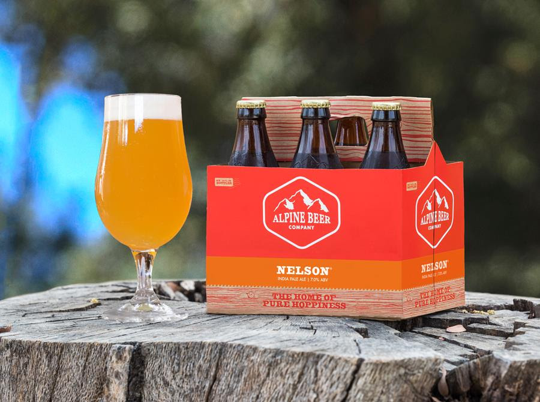

HOME
IPAs
Nelson IPA
Alpine Beer Company
Named after Nelson Sauvin, an outstanding hop varietal from New Zealand. The hop is introduced through the brewing and dry-hopping of this complex and well-balanced IPA. A hazy straw hued ale, Nelson is topped by bright white beer foam and offers a tropical hop aroma. The pine and fruity hop notes linger, but are well-balanced by the smooth, malty addition of European rye malts.
Known as the “Home of Pure Hoppiness,” Alpine Beer is a small-town brewery, nestled in the foothills of the mountains just outside of San Diego. From IPAs to small-batch sours, they've been crafting high-quality ales since 1999.
Check out their site HERE 